{kind=link}
Vicente Ordóñez Román
Assistant ProfessorDepartment of Computer Science
University of Virginia
vicente@virginia.edu
I'm Assistant Professor in the Department of Computer Science at the University of Virginia. Before this, I spent a year as visiting researcher at the Allen Institute for Artificial Intelligence (AI2) in Seattle. I received my PhD in Computer Science at the University of North Carolina at Chapel Hill in 2015 advised by Prof. Tamara Berg. Previously, I obtained an MS in Computer Science at Stony Brook University (SUNY) and an engineering degree at the Escuela Superior Politécnica del Litoral in Ecuador. I'm a recipient of a Best -Long- Paper Award at the 2017 Conference on Empirical Methods in Natural Language Processing (EMNLP), and the Best Paper -Marr Prize- Award at the 2013 International Conference in Computer Vision (ICCV). I have also been recently awarded an IBM Faculty Award and a Google Faculty Research Award. Here is a link to an official [bio], and my [curriculum vitae].
- 03/2018. Keynote Speaker, iV&L'18 Conference, Tartu, Estonia.
- 02/2018. WinoBias paper accepted to NAACL 2018.
- 02/2018. Feedback-prop paper accepted to CVPR 2018
- 02/2018. Received a Google Faculty Research Award 2017. Thanks Google!
- 01/2018. Received an IBM Faculty Award 2017. Thanks IBM!
- Quoted in The Cavalier Daily [1] [2] and WIRED [3].
- 08/2017. Our work at UVA with UCLA's NLP Group gets coverage in WIRED, Daily Mail, The Times of London, Glamour, Bloomberg.
- 09/2017. Best --Long-- Paper Award at EMNLP 2017~!
- Spring 2018 - Introduction to Computer Vision.
- Fall 2017 - Computational Visual Recognition.
- Spring 2017 - Vision & Language.
- Fall 2016 - Computational Visual Recognition.
UVA Computer Vision seminar. I also co-direct with Paul Humphreys the Human and Machine Intelligence seminar.
Shanmin Pang (Visiting Scholar), Tianlu Wang (PhD Student), Xuwang Yin (PhD Student), Ziyan Yang (PhD Student -- rotation advisor), Fuwen Tan (PhD Student -- temporary advisor), Fengyang Zhang (MSc Student), Abhimanyu Banerjee (MSc Student), Anudeep Konda (MSc Student), KS Sivaraman (MSc Student), Vijay Edupuganti (Undergraduate student), Arun Kannan (Undergraduate Student).
-
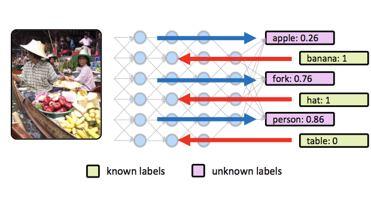
NEW! Feedback-prop: Convolutional Neural Network Inference under Partial Evidence
.
Intl. Conference on Computer Vision and Pattern Recognition. CVPR 2018. Salt Lake City, Utah. June 2018.
[pdf] [arXiv] [bibtex] -
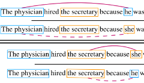
NEW! Gender Bias in Coreference Resolution: Evaluation and Debiasing Methods
North American Chapter of the Association for Computational Linguistics. NAACL 2018. short.
New Orleans, Louisiana. June 2018. [pdf] [arXiv] [bibtex] -
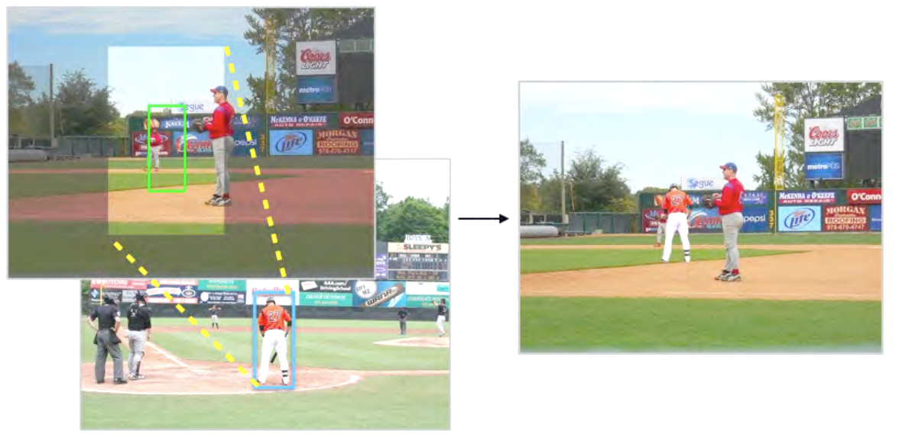
NEW! Where and Who? Automatic Semantic-Aware Person Composition
Winter Conference on Applications of Computer Vision. WACV 2018. Lake Tahoe, Nevada. March 2018.
[arXiv] [code] [bibtex] -
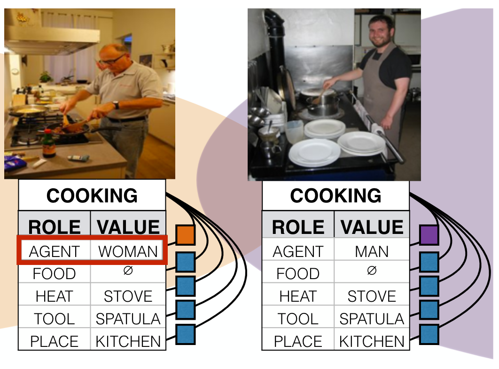
Men Also Like Shopping: Reducing Gender Bias Amplification using Corpus-level Constraints
Empirical Methods in Natural Language Processing. EMNLP 2017. Copenhagen, Denmark. September 2017.
[pdf] [code] [bibtex] (~Oral presentation + Best Long Paper Award!) -
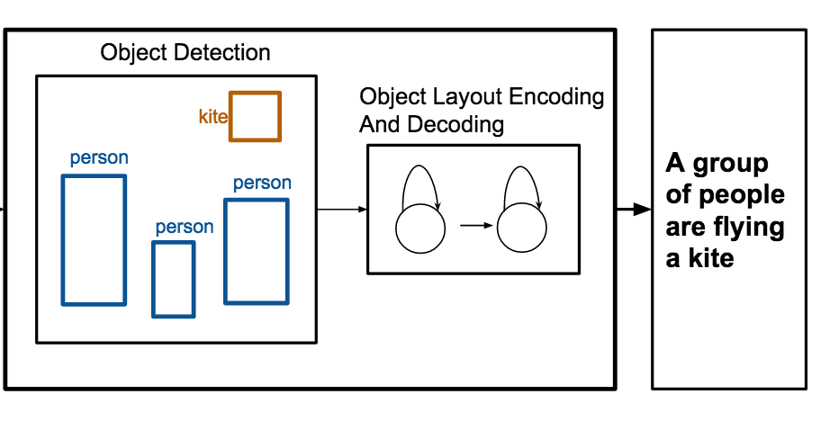
Obj2Text: Generating Visually Descriptive Language from Object Layouts
Empirical Methods in Natural Language Processing. EMNLP 2017. Copenhagen, Denmark. September 2017.
[pdf] [arxiv] [project page + demo] [code] [bibtex] (~Oral presentation) -
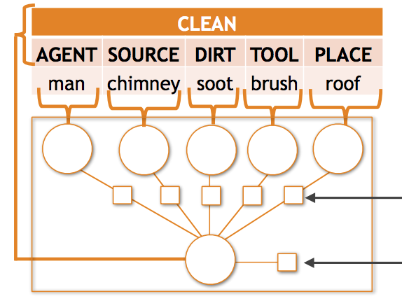
Commonly Uncommon: Semantic Sparsity in Situation Recognition
.
Intl. Conference on Computer Vision and Pattern Recognition. CVPR 2017. Honolulu, Hawaii. July 2017.
[pdf] [arXiv] [bibtex] [demo] -
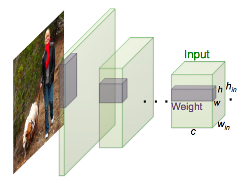
XNOR-Net: ImageNet Classification Using Binary Convolutional Neural Networks
.
European Conference on Computer Vision. ECCV 2016. Amsterdam, The Netherlands. October 2016.
[arXiv] [project page] [code] [bibtex] (~Oral presentation) -
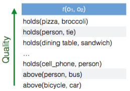
Stating the Obvious: Extracting Visual Common Sense Knowledge
.
North American Chapter of the Association for Computational Linguistics. NAACL 2016. short.
San Diego, CA. June 2016. [pdf] [bibtex] (~Oral presentation) -
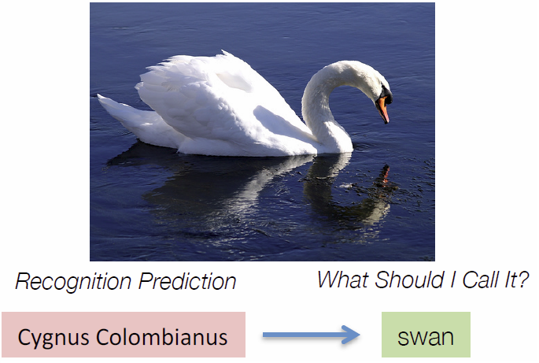
Learning to Name Objects
.
Communications of the ACM. March 2016 (Vol. 59, No. 3). (~Research Highlight)
[pdf] [link] [technical perspective] [bibtex] -
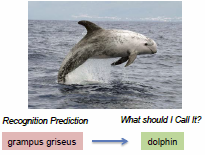
Predicting Entry-Level Categories
.
International Journal of Computer Vision - Marr Prize Special Issue. IJCV 2015.
[pdf] [link] [bibtex] -
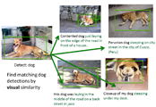
Large Scale Retrieval and Generation of Image Descriptions
.
International Journal of Computer Vision. IJCV 2015. [August 2016 Issue]. [pdf] [link] [bibtex] - 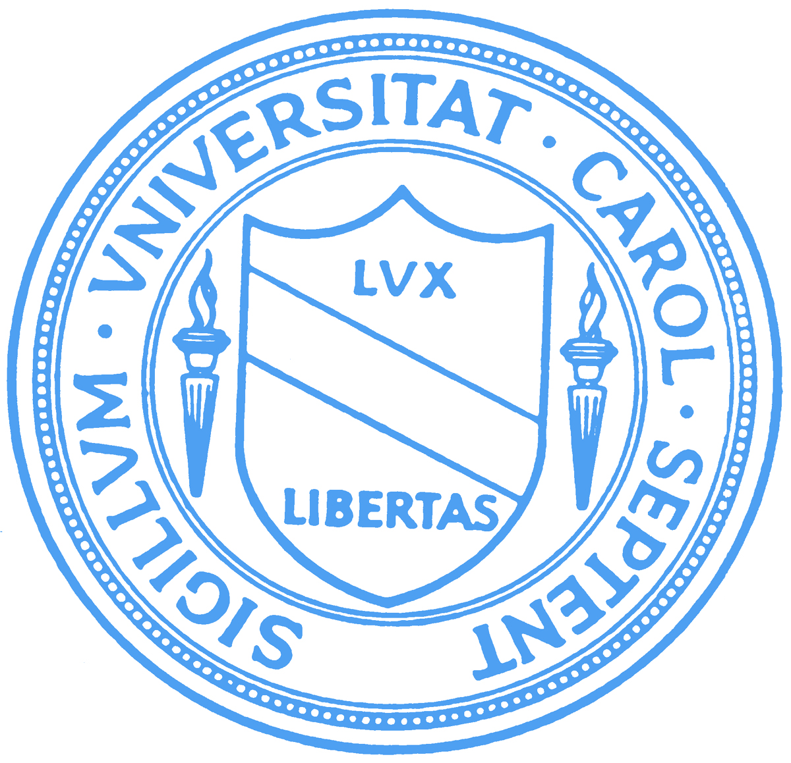
-
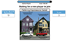
ReferItGame: Referring to Objects in Photographs of Natural Scenes
.
Empirical Methods on Natural Language Processing. EMNLP 2014. Doha, Qatar. October 2014.
[pdf] [project page] [game] [bibtex] (~Oral presentation) -
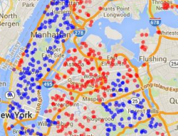
Learning High-level Judgments of Urban Perception
.
European Conference on Computer Vision. ECCV 2014. Zurich, Switzerland. September 2014.
[pdf][project page] [bibtex] -
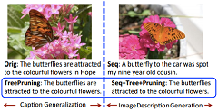
TreeTalk: Composition and Compression of Trees for Image Descriptions
.
Transactions of the Association for Computational Linguistics. TACL 2014.
To be presented at EMNLP 2014 in Doha, Qatar. October 2014. [pdf] [bibtex] -
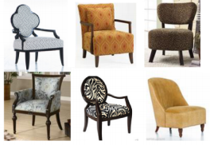
Furniture-Geek: Understanding Fine-Grained Furniture Attributes from Freely Associated Text and Tags
.
IEEE Winter Conference on Applications of Computer Vision. WACV 2014. Steamboat Springs, CO. March 2014.
[pdf][project page] [bibtex] -
From Large Scale Image Categorization to Entry-Level Categories
.
IEEE International Conference on Computer Vision. ICCV 2013. Sydney, Australia. December 2013.
[pdf] [supplemental material] [slides] [project page] [bibtex] (~Oral Presentation + Best Paper Award - Marr Prize!) -
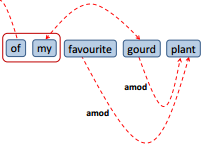
Generalizing Image Captions for Image-Text Parallel Corpus
.
Association for Computational Linguistics. ACL 2013. short. Sofia, Bulgaria. August 2013.
[pdf] [data+results] [bibtex] -
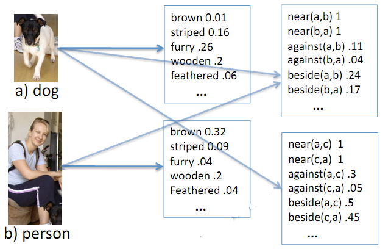
Baby Talk: Understanding and Generating Simple Image Descriptions
.
IEEE Transactions on Pattern Analysis and Machine Intelligence. PAMI 2013
[pdf] [link] [bibtex] -
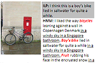
Collective Generation of Natural Image Descriptions
.
Association for Computational Linguistics. ACL 2012. Jeju, South Korea. July 2012.
[pdf] [data] [bibtex] (~Oral presentation) -
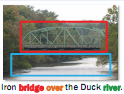
Im2Text: Describing Images Using 1 Million Captioned Photographs
.
Advances in Neural Information Processing Systems. NIPS 2011. Granada, Spain. December 2011.
[pdf][code+dataset] [poster] [search tool] [bibtex] (~Spotlight presentation) -
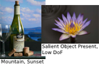
High Level Describable Attributes for Predicting Aesthetics and Interestingness
.
IEEE Computer Vision and Pattern Recognition. CVPR 2011. Colorado Springs, CO. June 2011.
[pdf] [related code for saliency + low DoF attributes] [bibtex] -
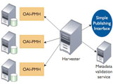
The Ariadne Infrastructure for Managing and Storing Metadata
.
IEEE Internet Computing 2009 . Emerging Internet Technologies and Applications for E-learning.
[link]